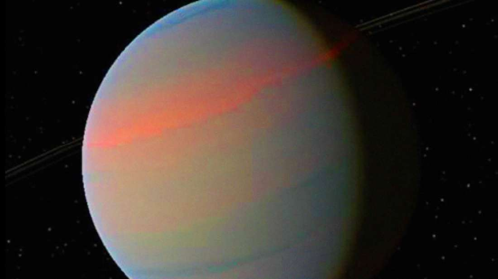

Massive Object In The Milky Way's Bulge Is So Big We Don't Know If It Is A Planet Or Not

You might be tempted to think that by now we must have nailed down exactly what it takes to make
a planet, but there you’d be mistaken. In general, it is an object that orbits a star, massive
enough to have its own gravity in order to make it spherical – but not so massive that it is able
to fuse hydrogen into helium – while also clearing away any debris as it travels on its merry orbit.
This is fine for smaller rocky planets, but as the gaseous variety start to get a bit larger, things begin to get a little blurry. At some point, the celestial object turns from a planet into a "failed" star, otherwise known as a brown dwarf. Now a new study recently published may well have identified a massive object in the Milky Way’s bulge that is at this strange threshold, and is either a giant exoplanet or a sub-stellar entity.
The potential hefty planet is located some 22,000 light-years away, and was detected in June last year as a microlensing event by the Optical Gravitational Lensing Experiment (OGLE) based in Poland, in which the gravity of the massive object alters the light from its parent star giving away its existence and mass. It has been named OGLE-2016-BLG-1190Lb.
The researchers have managed to calculate that is it roughly 13.4 times the mass of Jupiter, which itself is 318 times the mass of Earth, making this latest possible planet a stonking 4,261 times the mass of our little blue dot. Now the generally accepted definition of a brown dwarf is a substellar object that weighs between 13 and 75 Jupiter masses.
Going by this, the colossal body would just sneak into the category of brown dwarfs, although fascina tingly, right at the very lowest mass possible. But if this is right, then there’s another problem. You see the object is located smack bang in the middle of a zone surrounding the star it is orbiting known as the “brown dwarf desert”. As the name suggests, this region is not normally associated with brown dwarfs due, it was thought, to how they form from collapsing gas. If this occurs too close to the star, then the heat from the stellar object blows the gas away and the brown dwarf cannot form. And yet here is OGLE-2016-BLG-1190Lb.
So if this epic object is indeed a failed star, then it would raise quite a few questions, to say the least.
This is fine for smaller rocky planets, but as the gaseous variety start to get a bit larger, things begin to get a little blurry. At some point, the celestial object turns from a planet into a "failed" star, otherwise known as a brown dwarf. Now a new study recently published may well have identified a massive object in the Milky Way’s bulge that is at this strange threshold, and is either a giant exoplanet or a sub-stellar entity.
The potential hefty planet is located some 22,000 light-years away, and was detected in June last year as a microlensing event by the Optical Gravitational Lensing Experiment (OGLE) based in Poland, in which the gravity of the massive object alters the light from its parent star giving away its existence and mass. It has been named OGLE-2016-BLG-1190Lb.
The researchers have managed to calculate that is it roughly 13.4 times the mass of Jupiter, which itself is 318 times the mass of Earth, making this latest possible planet a stonking 4,261 times the mass of our little blue dot. Now the generally accepted definition of a brown dwarf is a substellar object that weighs between 13 and 75 Jupiter masses.
Going by this, the colossal body would just sneak into the category of brown dwarfs, although fascina tingly, right at the very lowest mass possible. But if this is right, then there’s another problem. You see the object is located smack bang in the middle of a zone surrounding the star it is orbiting known as the “brown dwarf desert”. As the name suggests, this region is not normally associated with brown dwarfs due, it was thought, to how they form from collapsing gas. If this occurs too close to the star, then the heat from the stellar object blows the gas away and the brown dwarf cannot form. And yet here is OGLE-2016-BLG-1190Lb.
So if this epic object is indeed a failed star, then it would raise quite a few questions, to say the least.
By Josh Davis